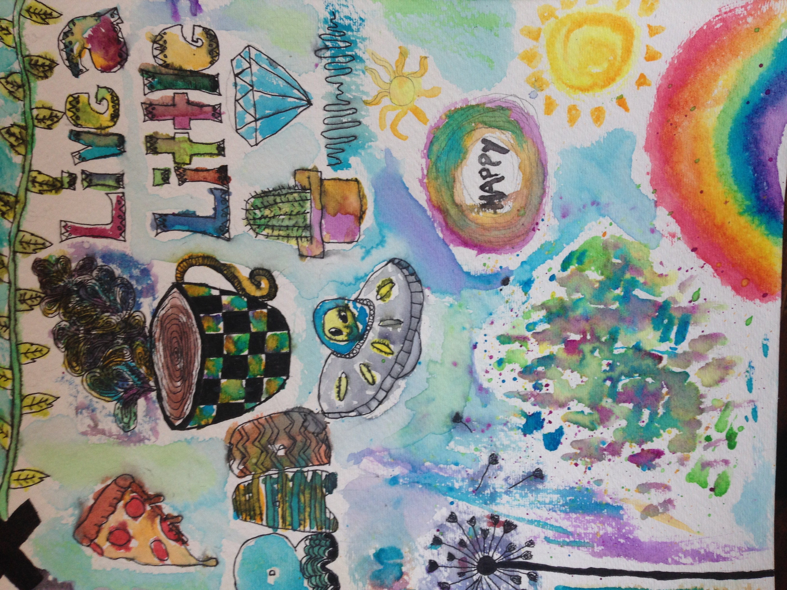
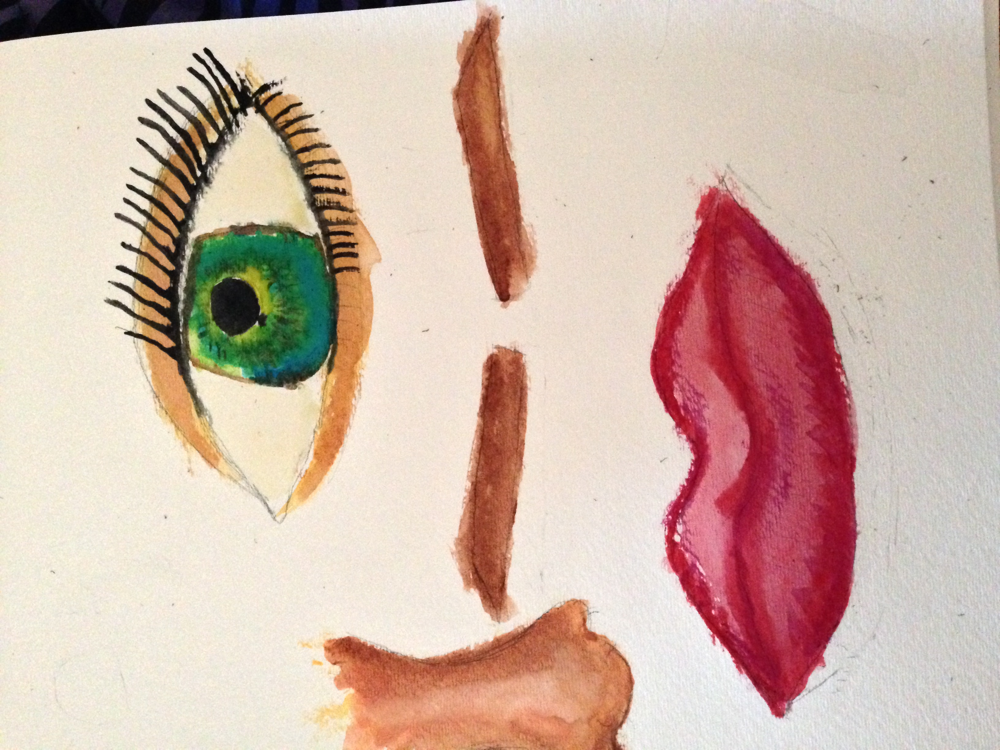
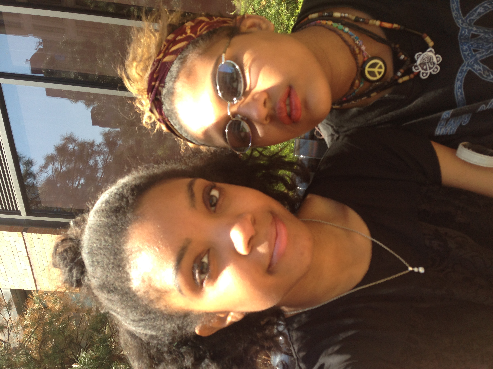

Favorite Movie(s)
I watch tons of movies. I probably watched half of the movies on demand. Since this is the case, I can't possibly pick ONE favorite one. I have many favorite movies which include: Warm Bodies, The Twilight saga, Insidious, Pretty much all of the Marvel superhero movies, Bring it On, The Perks of Being a Wallflower, etc etc.
Favorite Song
There are so many songs that I like, so Its hard to choose just one... but if I had to I would pick "Live and Let Die" originally by Paul McCartney but my favorie version is the cover by Guns N' Roses

Favorite T.V series
VAMPIRE DIARIES!!!!
Favorite Things To Do:
Traveling, hanging out with friends, cooking, painting etc.
  